| 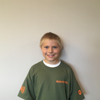 | 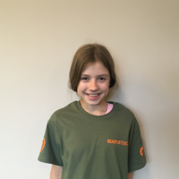 | 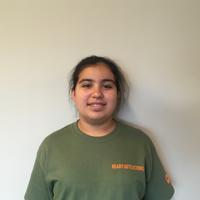 | 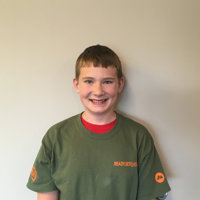 | 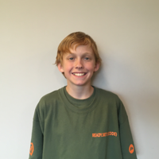 | 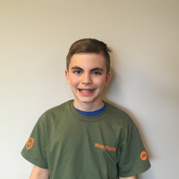 |
| 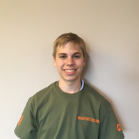 | 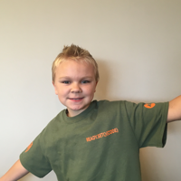 | 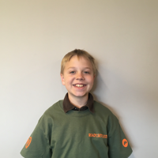 | 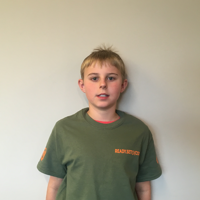 | 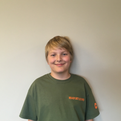 | 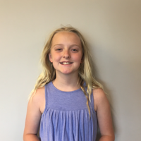 |
| 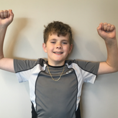 | 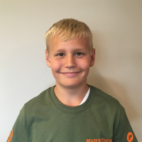 | 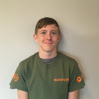 | 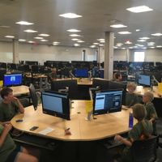 |
FLG Code Camp(s) run throughout the summer (each camp lasts one full week). Students learn the basics of coding through an interface that resembles one of a video game thereby building immediate enthusiasm. As the camp progresses, they work in groups to design computer games. The kids also listen to community leaders who are involved in tech related fields.
Hack the Class- Intro to Coding is a program hosted by a school's math or science teacher, operating with a similar but streamlined curriculum to the summer code camp. It runs roughly one hour a day and "takes over" the math or science period. Appropriate for ages 9-17 years old.
This READY.SET(){CODING} initiative aligns with our Chambers overall mission to assist in building a highly-skilled and employable local workforce for tomorrow, advancing a strong business climate, and serving as catalyst for economic development.
We are providing our Flagstaff youth with science, technology, engineering and math (STEM) skills; in other words, every possible advantage in meeting the digital demands of our future workplace.
Through our Chambers sector strategy sessions, an educated workforce with technology skills has been identified as a top priority for many different types of local businesses. These include manufacturing, biotech, healthcare, finance and communications. READY.SET(){CODE} is an accessible avenue for local youth at early ages (9-17) to build a strong talent pipeline to supply local employers who state that their current and future success is reliant on tech-savvy talent with critical thinking and problem solving skills. Computer programming jobs are growing at 2X the national average, according to Code.org.
This equates to 1,000,000 more jobs than students by 2020 and a $500 bilion opportunity across every area of intrest and industry. Coding is the universal skill/language of tumorrow's workforce. Serving as a "catalyst for comunity and economic development" includes laying the foundation for building a highly skilled and employable local workforce for tomorrow.
We are aiming to inspire the younger generation to get started in understanding the language of technology and its cross-functionality in buisness. READY.SET(){CODE} is not just about programming but fostering the fundamentals of logic and becoming better equipped to function in the digitally advanced world we live in. In the process of learing to code, kids are learning mathematical and computational ideas like variables and conditionals. They are truly learning strategies for solving problems, desining projects, communication, and teamwork-all skills businesses look for when hiring. These basic to advanced skills being taught and interactions with the professional community will ultimatly lead to a strong, confident new generation entering the increasingly growing digital workplace.